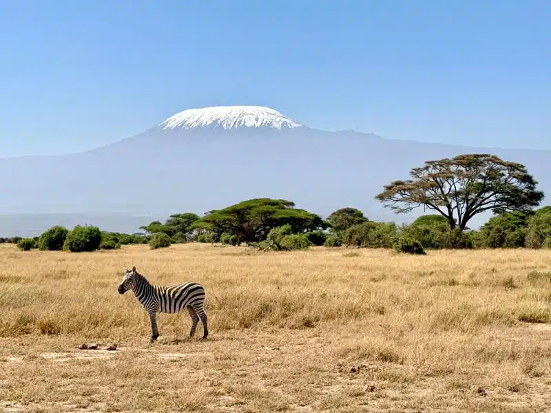
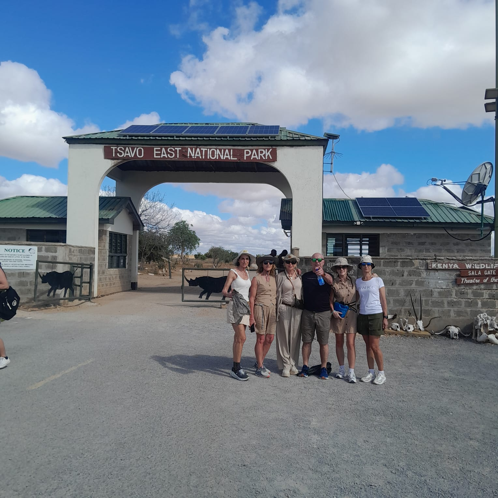
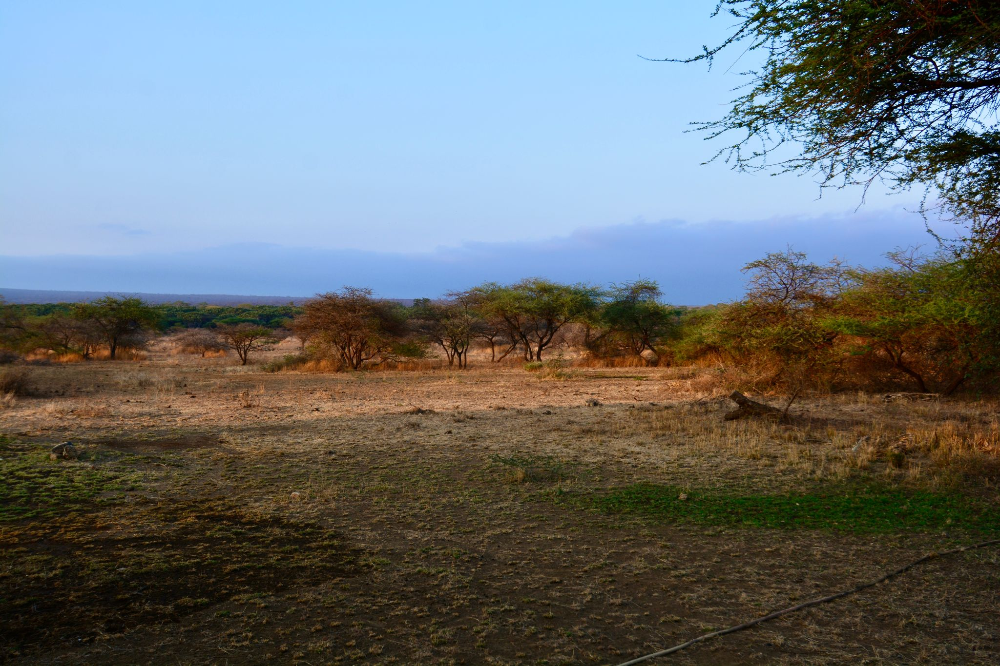
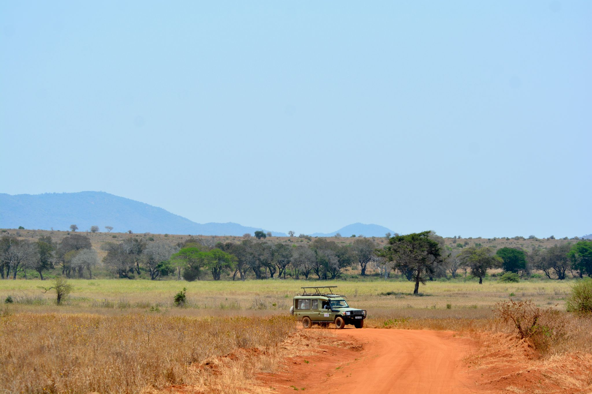
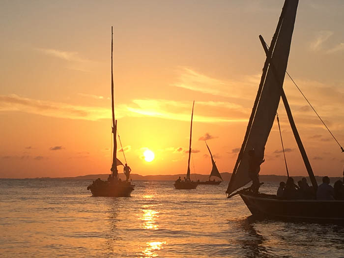
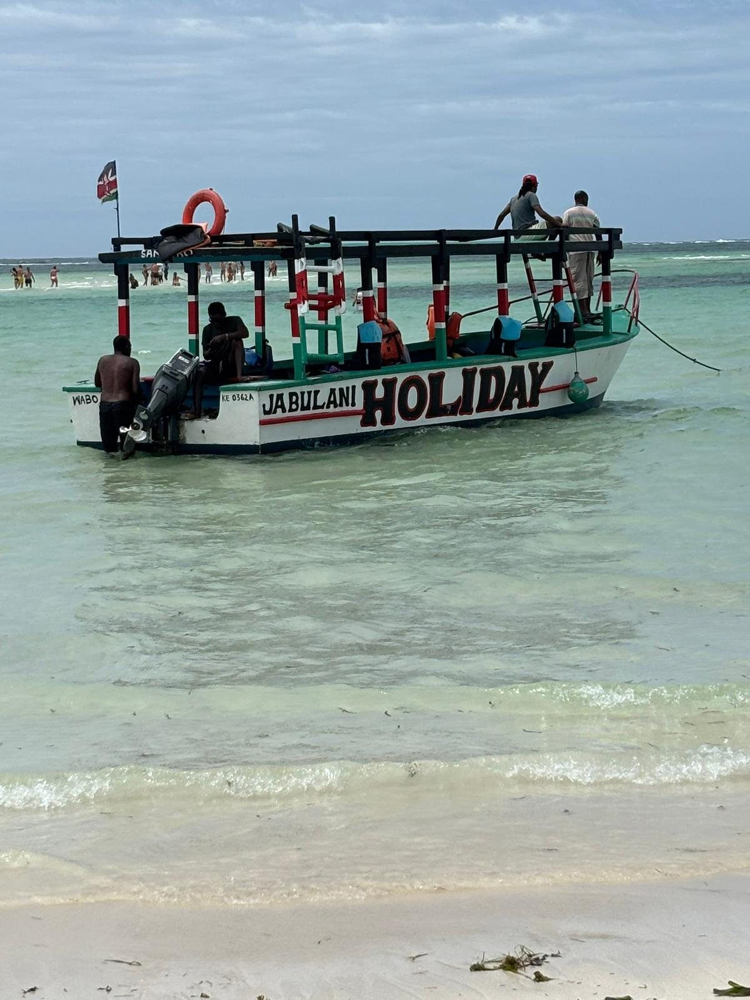
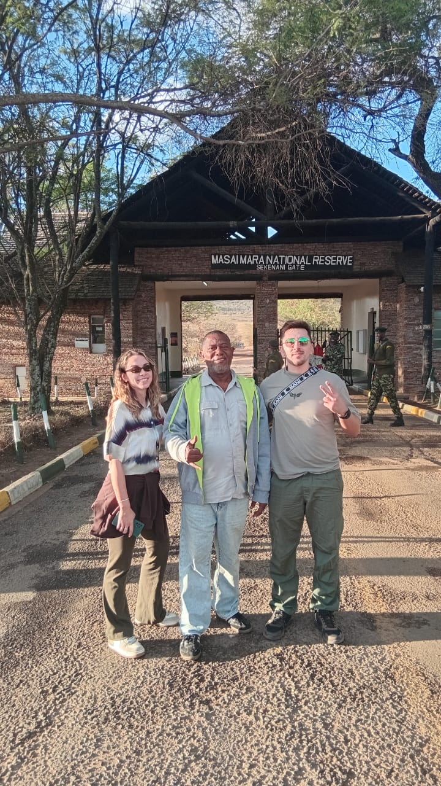
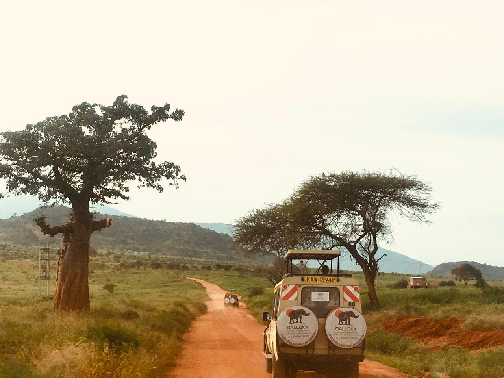
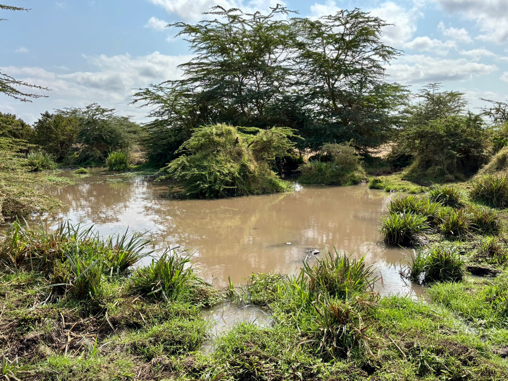
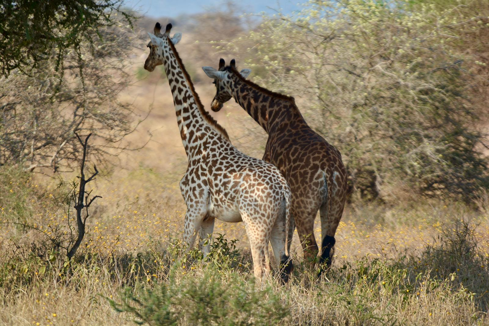

Popular Safari Packages

🐘 3 Days Masai Mara Safari
💰 From $450
📅 3 Days / 2 Nights

🦁 3 Days Amboseli Safari
💰 From $420
📅 3 Days / 2 Nights

🐘 2 Days Tsavo East Safari
💰 From $280
📅 2 Days / 1 Night

🌄 3 Days Tsavo West Safari
💰 From $390
📅 3 Days / 2 Nights

🐆 3 Days Samburu Safari
💰 From $520
📅 3 Days / 2 Nights

🦩 2 Days Lake Nakuru Safari
💰 From $320
📅 2 Days / 1 Night

⛵ Lamu Dhow Sunset Tour
💰 From $60
📅 Half Day Experience

🐠 Watamu Marine Park Snorkeling
💰 From $75
📅 Half Day Tour

🐘 4 Days Masai Mara Safari
💰 From $650
📅 4 Days / 3 Nights

🦒 3 Days Amboseli Kilimanjaro Safari
💰 From $480
📅 3 Days / 2 Nights

🐘 3 Days Tsavo East & Tsavo West Safari
💰 From $460
📅 3 Days / 2 Nights

🦓 5 Days Kenya Wildlife Safari
💰 From $890
📅 5 Days / 4 Nights